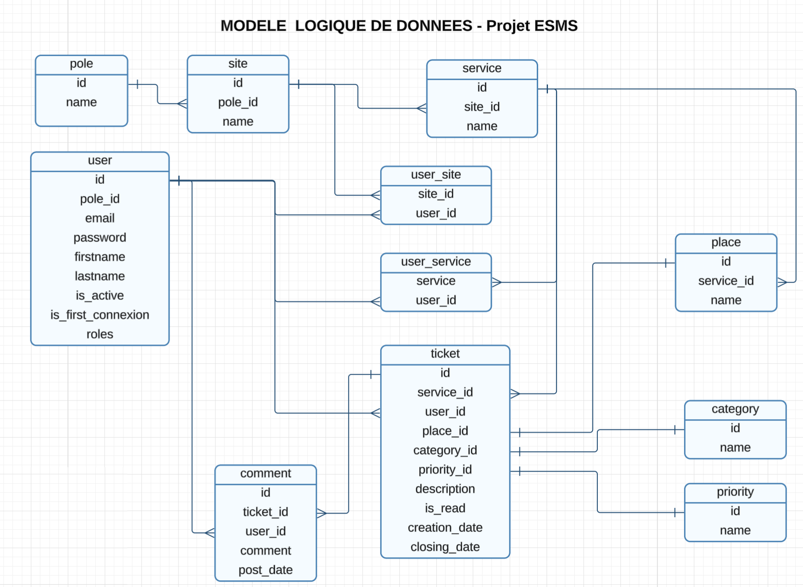
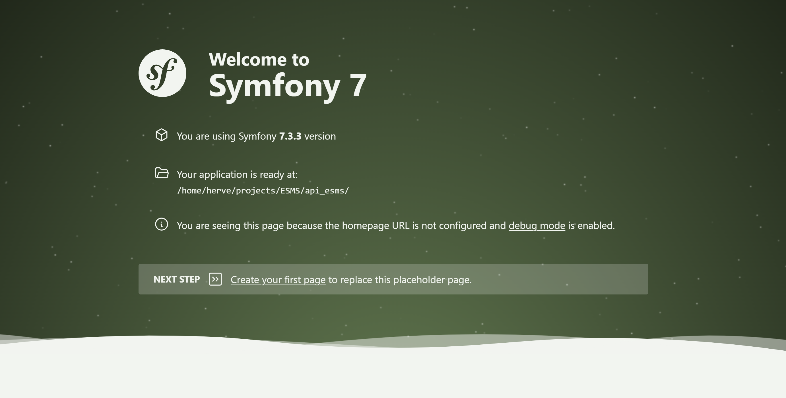
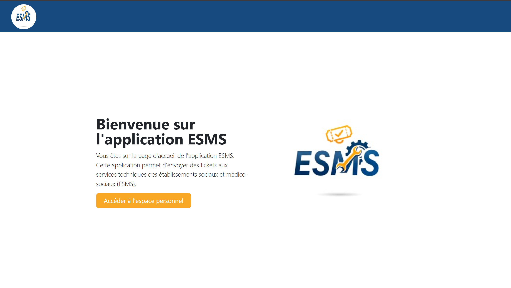
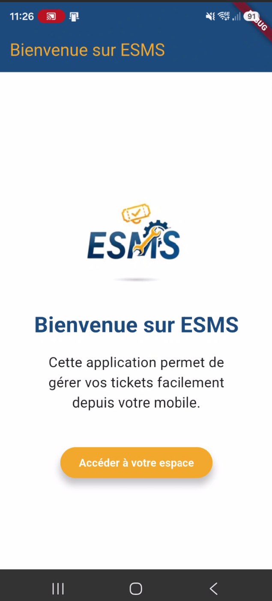
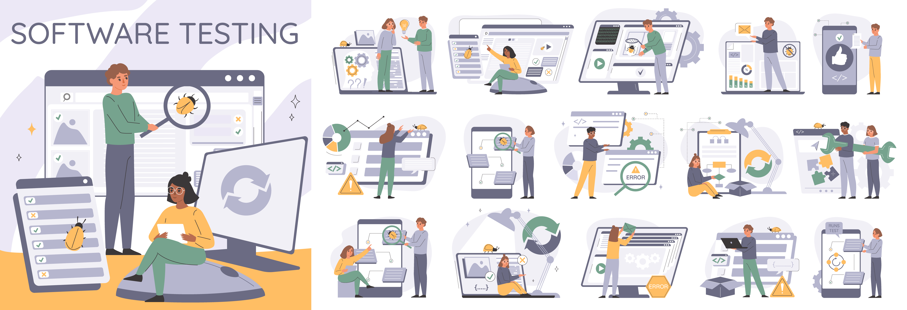

Application Web & Mobile – Gestion des interventions techniques
Le projet ESMS est une solution complète destinée aux établissements et services médico-sociaux. Il permet de gérer efficacement les demandes d'interventions du service technique, grâce à une application web, une application mobile, une API dédiée et une base de données centralisée.
Fort de plus de 20 ans d'expérience dans un ESMS en tant que responsable de la maintenance et coordinateur logistique, j'ai pu constater les difficultés rencontrées par le service technique pour gérer les demandes d'interventions.
C'est pourquoi j'ai décidé de développer une solution complète permettant de suivre, organiser et traiter efficacement les demandes d'interventions techniques.

Base de données centralisant les informations des modules.
Voir le module →
API REST assurant la communication entre les modules.
Voir le module →
Interface web pour les utilisateurs, techniciens et administrateurs.
Voir le module →
Application mobile pour les techniciens en intervention.
Voir le module →
Processus de tests et validations des modules.